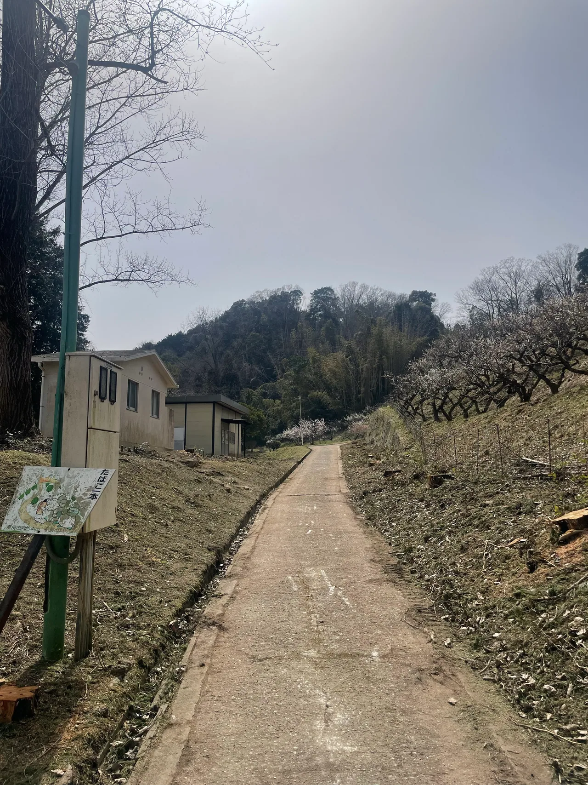

伐採は地上の幹や枝を切る作業、抜根は地中の根を取り除く作業です。木をなくした後に土地をどう使うかによって必要な範囲が変わるため、伐採の相談時に今後の利用目的もお知らせください。

地上の木をなくすことと、根を取ること
木を切っても、地面には切株や根が残ります。枝が屋根にかかることを解消したい場合と、地面を掘って駐車場にしたい場合では、相談する作業の範囲が違います。「木を全部なくす」という言い方だけでは認識がずれることがあるため、幹を切るだけでよいか、根まで取りたいかを分けて伝えましょう。伐採の見積に抜根が自動的に含まれるとは限りません。
土地の使い方を先に決める
新しく植える、庭として残す、舗装する、建物を建てるなど、作業後の用途を整理します。建築や外構の工事が続く場合は、その施工業者が必要とする地面の状態を確認してから相談すると二度手間を減らせます。抜根後の埋め戻し、土の不足、地面の仕上げなども別に確認する項目です。写真だけで必要な工事を確定せず、後工程と範囲を揃えることを優先します。
塀・配管・建物に近い根は現地条件を確認
根の広がりは地上からすべて見えるわけではありません。塀や建物に近い場所、地中の配管が考えられる場所、機械が入りにくい庭などでは、作業方法を現地で確認する必要があります。見えている切株の太さだけで費用や施工可否を決めることはできません。設備の図面など手元に資料があれば、相談時にその有無も伝えてください。
切株を残す場合に相談する内容
切株を残す場合は、どの程度の高さを希望するか、通行の邪魔にならないか、後から別の作業をする予定があるかを確認します。樹種や状態によって作業後の経過も異なるため、将来の管理について不明な点は見積時に相談しましょう。薬剤の使用などを自己判断で前提にせず、伐採・抜根・処分・地面の仕上げを別の項目として確認することが、費用比較にも役立ちます。
相談前に揃えたいこと
- 伐採後に土地をどう使う予定か
- 切株を残すか、根まで取りたいか
- 近くの塀・配管・建物の位置
- 後に入る建築・外構工事との分担
竜樹伐採では、奈良市を中心に奈良県内の伐採をご相談いただけます。写真と市町村、希望する作業範囲をお送りください。写真による概算で分からない条件は、現地確認の要否も含めてご案内します。
現場の状態によって、対応できる方法や費用は変わります。この記事は個別の現場の診断や正式見積に代わるものではありません。